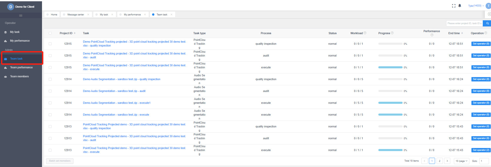
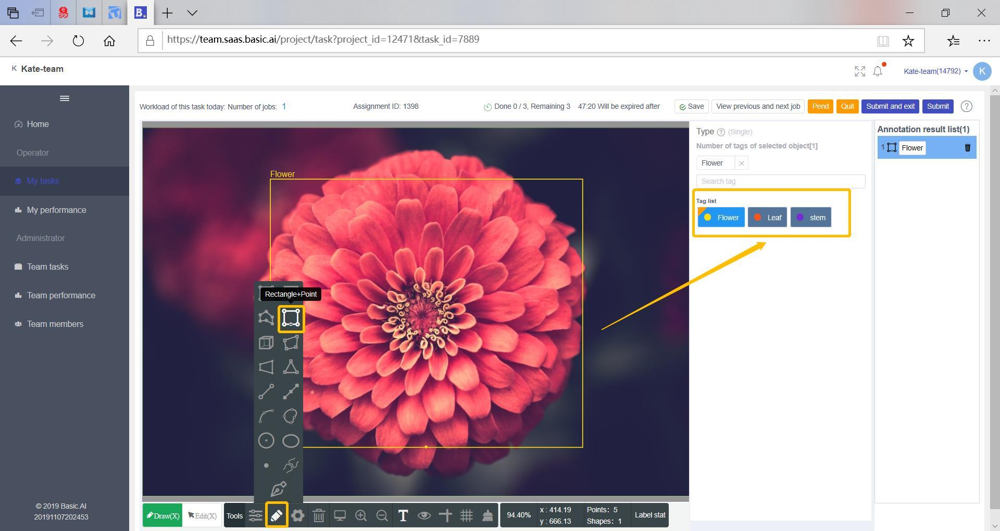

BasicAI OnPrem Platform: Team Module
This is an outline of the Team Module, which is to be accessed by managers and Operator/Workers from BPO affiliate partners in order to review and execute assigned tasks.
Platform Login
As a Team Operator/Worker/Manager, you will log into the platform through below URL
https://team.sandbox.basic.ai/login
1 Workflow Overview
Each Project starts with a detailed set of requirements. The BasicAI team will work with the customer to develop detailed requirements and create annotation template(s) for each Task, using the Team module of BasicAI Onplatform.
We will send client requirement sheet to the BPO Team Manager through email. The BPO team needs to see the requirements carefully and arrange the Operator/Workers according to the volume and delivery time. Your team can ask us any questions they may have and give us the working plan, such as total number of Operator/Workers, Operator/Workers for each batch, estimated time of completion, etc. For Projects with a large volume of data, normally we will give you Tasks in batches. After total understanding of the requirements, the Operator/Workers can begin their annotation work.
1.1 Changes to Requirements
Customer users have access to a dashboard in their Admin module that enables them to track Project progress and also review results as they are produced. BasicAI Cloud is designed to enable customers to make any necessary adjustments at the beginning of a Project, which is much more efficient than doing rework at the end of a Project if the customer’s requirements were not entirely correct. If customers make changes to their requirements after the Project has started, we may need to make changes to their template as well.
The BasicAI team will inform the designated Team Manager of any new requirements or changes to existing requirements in a timely manner. We expect the Team Manager will inform its Operator/Workers of any changes, the Operator/Workers with conform to the new requirements going forward, and additional QC may be required for labeling done prior to the changes.
1.2 Communication
During each Project, we rely on timely communication through email, slack, or agreed upon social media, so that both parties can address issues as they arise.
1.3 Quality Inspection
After executing each Task, the supervisors of your BPO team should audit all of the work performed by your team, before submitting to BasicAI for Audit and approval. BasicAI closely monitors the productivity and error rates of its partners in order to provide its clients with the best results possible. Low productivity and/or high error rates lead to lower volumes of business that we are able to source through your BPO firm, so it is important to internally monitor your own metrics.
2 Task Assignment (Team Manager)
After the project administrator completes the project configuration in the background, on the team platform, the team manager could assign tasks by clicking [Team Task] to view the received tasks.

2.1 Set Operator/Worker
Click [Set Operator/Worker] to set the executor for the task In the task list.
This shows all members of the current team. Check the box to the left of the list to give the corresponding Operator/Worker permission to execute the task. (Check it to be granted permission, no need to save)
When setting up people, we can find the specified users by searching, filtering their groups, and filtering user tags.

3.Task Execution (Team Operator/Worker)
3.1 Check Available Tasks
When an Operator/Worker logs in to the Team platform, he/she can view the Task list that has been assigned to them by clicking [My Tasks].
Click [Execute] for a specific Project to begin your work.
3.2 Task Execution Instructions
The user interface for Task Execution is divided into three areas:
Basic Job Information
Basic Job Operations
Annotation Area
3.2.1 Basic Job Information
[Job Performance] This area displays the daily performance on current job by the Operator/Worker.
[Assignment/Job info] When the mouse is placed over the [Assignment ID] , the details of the Job will show up. If you are having a problem with any Job, take notes of the details including the Project, Assignment, and Task IDs for later reference.
[Done] This area displays the number of Jobs done/the number of Jobs claimed by the Operator/Worker, as well as the remaining execution time for the current Job.
3.2.2 Basic Job Operations
[Pend/Difficult Job] By clicking this button, you can pause the Job while keeping it under the name of the current Operator/Worker. The Team Manager can check the Job in his/her [Team Tasks] panel. The Operator/Worker can use this function to keep doing subsequent Jobs while consulting the Team Manager. Once the administrator provides instructions, the Operator/Worker can quickly find the Job again in [My Tasks] in order to finish it.
[Quit] Clicking this button will exit the execution interface without submitting the Job currently in execution mode. Any claimed Job that have not been executed will be sent back to the Job pool for other Operator/Workers to complete.
[Submit and Quit] Click this button to submit the current Job and leave the execution interface. Any claimed Job that have not been executed will be sent back to the Job pool for other Operator/Workers to complete.
[Submit] Click the button to submit current Job and move on to the next Job.
[?] Hover the mouse over this icon to check hotkeys for this template.
[View previous and next job] This button is unique to image annotating as it enables you to check the previous and next images in a pop-up window. It is quite helpful when it comes to annotating a project where adjacent images are relevant to each other. You can also check the images in larger size by clicking the preview images.

3.2.3 Annotation Area
In the Annotation Interface, you will find a combination of components and layouts that vary for different kinds of Task. These are configured at the Template level. The layout of templates in different categories will be explained later in the introduction of different annotation types.
3.2.4 Annotation Types
3.2.4.1 Text Annotation
The text annotation interface is divided into three areas by default: text display, tag selection, and results. Content search is available in the text display area.
For example:
In the text display area, you can drag the mouse with left button down to select key entries from the text. Results will be automatically generated in the results area according to what you have selected, and the annotated text will be shown and highlighted in the area.
Set tags or options for a key entry or the entire text.
By pressing C on the keyboard you can switch to non-annotating mode to copy & paste content. Once you have finished copying or pasting, the text display area will return to labeling mode automatically.
3.2.4.1.1 Hotkeys for Text Annotation (Hover “?” for hotkeys)
[C] Switch between annotating mode and non-annotating mode
[D] Submit
3.2.4.1.2 Search Content
Content being searched is highlighted in the text. To switch between search results, simply click the up button and the down button.
3.2.4.2 Image Annotation
3.2.4.2.1 Common Operation
The image annotation interface is divided into three areas by default: image display area, tag selection area, and annotation tools area.
3.2.4.2.2 Hotkeys for Image Annotation (Hover “?” for hotkeys)
[X] Switch between draw mode and adjustment mode
[B] Restore image to default size
[V] Zoom in
[C] Zoom out
[M] Show/hide tags
[E] Press it down to hide annotated graphical figures
[K] Show/hide auxiliary line
[G] Select spline curve tool
[H] Select closed curve tool
[P] Select line tool
[R] Select rectangle tool
[T] Select polygon tool
[U] Select quadrangle tool
[F] Select polyline tool
[Y] Select cuboid tool
[I] Select trapezoid tool
[O] Select triangle tool
[J] Select point tool
[<] Tilt auxiliary line left
[Shift+<] Tilt auxiliary line left substantially
[>] Tilt auxiliary line right
[Shift+>] Tilt auxiliary line right substantially
[?] Restore auxiliary line
[N] Allow polygons to share edges in annotating mode
[:] Select which edge to share
[A] Switch to mask image
[Alt+Left mouse button] Select a key point in adjustment mode to highlight the whole group, which can be deleted by clicking the right mouse button (this shortcut is for key point annotation)
[UP]/[DOWN] Switch between graphical figures
[Right mouse button] Delete selected label in adjustment mode
[Shift+Right mouse button] Delete all annotations in adjustment mode
[D] Submit annotating results
[ESC] Cancel ongoing annotating
[Ctrl+Z] Cancel points in the order in which they have been clicked, available for annotating multi-point figures (except for rectangles and points)
3.2.4.2.3 Annotation Tools
Point
After entering the operating interface, put the mouse on the brush icon below to select point tool.
Left click on the desired positions on the canvas.
Click to choose tags after selecting an annotated point if needed.
Line
After entering the operating interface, put the mouse on the brush icon below to select line tool.
Left click on both ends of a line on the canvas.
Click to choose tags after selecting an annotated line if needed.
Polyline
After entering the operating interface, put the mouse on the brush icon below to select polyline tool.
Successively left click on the points of a polyline on the canvas before right -clicking on the last point, from which a line will be automatically drawn to connect the first point and extends outside the canvas.
Click to choose tags after selecting an annotated polyline area if needed.
This tool is useful for annotating traffic lanes.
Spline curve
After entering the operating interface, put the mouse on the brush icon below to select spline curve tool.
Successively left click on a few points of a curve line before right-clicking on the last point. A spline curve will be automatically drawn and extends to the first and last points.
Click to choose tags after selecting a spline curve annotation if needed.
Closed curve
After entering the operating interface, put the mouse on the brush icon below to select closed curve tool.
Successively left click on a few points of a closed curve before right-clicking on the last point to finish annotating.
Click to choose tags after selecting a closed curve annotation area if needed.
Triangle
After entering the operating interface, put the mouse on the brush icon below to select triangle tool.

Left click the three points of a triangle.
Click to choose tags after selecting an annotated triangle if required.
This tool is usually used for annotating the far vanishing point of traffic lanes. It is recommended that the points on a traffic lane be selected first before selecting the vanishing point according to the direction of the lane.
Rectangle
After entering the operating interface, put the mouse on the brush icon below to select the rectangle tool.
First, left click in the upper-left corner of the rectangular area you want to select on the canvas, and then left click in the bottom-right corner of the same area to complete bounding box.
Click to choose tags after selecting a bounding box if required.

Quadrangle
Quadrangle annotation is similar to trapezoid except that a pair of parallel edges are not mandatory for drawing a quadrangle.
Polygon
After entering the operating interface, put the mouse on the brush icon below to select the polygon tool.
Left click on the canvas to start selecting points of a polygon area, and right click to select the last point to finish polygon annotation for a closed area.
Click to choose tags after selecting an annotated polygon area if needed.
Circle
After entering the operating interface, put the mouse on the brush icon below to select circle tool.
Left click the edge of the circle.
Click to choose tags after selecting an annotated circle if required.

Ellipse
After entering the operating interface, put the mouse on the brush icon below to select ellipse tool.
Left click the edge of the ellipse.
Click to choose tags after selecting an annotated ellipse if required.
Cuboid
After entering the operating interface, put the mouse on the brush icon below to select cuboid tool.
According to the sequence of the four points in the image below, successively click on four points to finish cuboid annotation.
Click to choose tags after selecting a cuboid annotation if needed.
Trapezoid
After entering the operating interface, put the mouse on the brush icon below to select trapezoid tool.
According to the sequence of the four points in the image below, successively click on four points to finish trapezoid annotation.
Click to choose tags after selecting a trapezoid annotation if needed.
Key points
After entering the operating interface, successively click points on the canvas according to the sequence of points on the diagram on the right.
If a point is covered or outside the canvas, you can annotate an approximate point on the canvas and add a note by clicking the buttons below the diagram.
You can click the button below the diagram to return to the last point for re-annotating.
Pencil (Region annotation)
After entering the operating interface, put the mouse on the brush icon below to select the pencil tool. You can change the thickness(on the upper) of the drawing line before annotating.
Any area painted by this pencil tool is the annotated region. This tool is often used for annotating objects requiring precision, such as hair.
Left click and move the mouse to start painting, and right click to finish.
Click to choose tags after selecting an annotated area if needed.
Rectangle+Point
After entering the operating interface, put the mouse on the brush icon below to select Rectangle+Point tool.
Left click the edge of the rectangle.
Click to choose tags after selecting an annotated rectangle if required.

Rectangular Seals
After entering the operating interface, put the mouse on the brush icon below to select rectangular seals tool.
Left click the edge of the rectangular seals.
Click to choose tags after selecting an annotated rectangular if required.
3.2.4.3 Audio Annotation
3.2.4.3.1 Common Operation
The audio annotation interface is divided into four areas by default: audio segmentation area, tag and description area, audio control panel area, and result and transcript.
Audio Segmentation
The audio segmentation area is split into an upper part and a lower part:
The upper part is audio annotating sector:
The red line is the split line, which can be added by clicking the right mouse button. The time information of each split line will be shown when the mouse moves over it. By clicking the red point above the red line, you can delete the split line, or if you want to move a split line, just drag the box below it;
The yellow line indicates the current playing position of the audio. You can move the line by left-clicking on the waveform.
If you double click on a split clip, it will be highlighted, with labeling results being highlighted below as well.
The lower part is audio preview sector:
This area showcases the preview of the waveform of the entire audio clip. The yellow line indicates the current playing position of the audio.
The sliding grey bar represents a clip that is displayed in the audio labeling sector (the upper part).
Audio Control Panel
This panel can: play and pause audio; zoom in and zoom out to change the time span of the audio labeling sector; record the total duration of the audio; set auto-play when a clip is selected; enable loop.
Zoom in
Zoom out
Click [Zoom in] to see more details of the waveform, or click [Zoom out] to see more of the waveform in the audio labeling sector.
[Auto-play] allows a clip or a result to be automatically played if selected.
[Loop] allows the entire audio or a selected clip to be played repeatedly.
team00060.jpgTag and Description
Choose attributes for the entire audio or selected clips. The attributes will be recorded in annotating results.
Result and Transcription
This area lists results of audio annotation:
The results are chronologically shown by default;
Click the [Play] button to play a selected clip;
“Time” represents the time span of each clip;
“Validity” decides whether a clip is valid and needs to annotate;
“Transcript” shows the content of each annotated clip. You can double click the area to revise the content.
“Attribute” represents the properties of each annotated clip.
3.2.4.3.2 Annotation Instruction
[Basic operations]
By right-clicking on the audio annotating sector you can add a splitter. After adding the first split line, the audio will be cut into two clips, with two corresponding results being generated in the results and transcripts area. Each of the results is deemed valid by default. When you double click the transcript column, you can transcribe the clip. For instance, number 1 and number 2 are recorded as the transcript content for the two results in the image above. A selected clip will be highlighted in red in the audio annotating sector, and its result will be highlighted in blue on the result list. By clicking the [Play] button at the front of each row, you can play the corresponding clip. If you have the [Loop] box checked, the clip will be played over and over.

Select attributes for each result in the tags area on the right. The selected attributes will be shown on the result list.
[Add]
For example, in the image above, the third clip, which has been transcribed, will be cut into two clips when a split line is added, and its transcript content will be saved in the first one of the two newly generated clips (see image below).

[Delete]
In the image above, if you want to delete the second clip, you need to select it on the result list, and find the corresponding piece of waveform above. Then you need to find the split line on its right, above which there is a red point that you need to click to delete the second clip.
Once the second clip is deleted, the transcript content in it will be merging with that of the third clip. You can also revise or delete the merged content if needed.
#### 3.2.4.3.3.Hotkey for Audio Annotation
[D] Submit
3.2.4.4 Video Annotation
3.2.4.4.1 Video Segmentation
Create a video segmentation project at admin platform.
Pay attention to the video data format.We should upload video data in .zip format, this is different from Object tracking, which we should upload video in .mp4 format.
Create a video segmentation template at Root or Admin platform before creating a project or during project configuration, or use the existing video segmentation template accordingly.
After completing the project configuration, go to Team platform to start annotation.
There are [Create] Button for creating new video segmentations, also [Fast-forward] and [Fast-backward] button for adjusting video play, you can also change the duration for fast-forward or fast-backward.
Click the [Play] button at the center of the video, you can play the video.
The example project is to annotating goal time.
Click [Create] you will see some new button, where you can[Set Start Time] and [Set End Time] by filling the time manually or clicking the clock UI to set the time automatically.
Click [Save] or [Cancel] to save or cancel your record/annotation.
After clicking [Save] you will see the record at the Result list area, you can choose a tag accordingly. Click the record, you can modify your record/annotation. You can also see your record at the bottom of the video layout area, the annotated segmentation will be shown in yellow at the timeline area.
3.2.4.4.2 Object Tracking
Object Tracking is an annotation type for annotate videos/images, tracking objects in the videos/images.
We can create a template first in root/admin for Object Tracking. And use it for annotation.

And then create a project, select Object Tracking. For this step, pay attention, for images/pictures, we should only upload them by zip. however, for video data we should upload a video directly in.mp4 format or videos one by one instead of packing them in.zip format, it does not work for videos in zip, this is different from other video annotation, which we should upload video in .zip format.
And then publish the project. When it comes to Configuration Page, choose Annotation Type by selecting the template we have created.
Then do all the continuous steps as usual, after finish configuration, go to team platform and execute the task. We will use the button in red rectangular and also the normal tags for mark the video.If you click Next Frame, you can check each frame of the video to track the video more accurately. For example if this project requires you to track face in the video.
Click “New” and draw a box on the face in the video, you will see a colorful rectangular box, the one show in the below is yellow rectangular box. You can also remove, make it shown or not see step 3 in the below image.
If the next frame,If next frame, the face moves, use the mouse to move it so as to track the face, the yellow box should be moved to what the green box is.
If there is no face in the next frame, just untick or uncheck the “Shown”, and you will find the yellow box disappears.
If there is face again in the next frame, tick/check “Shown” again so as to retrack the face.
Besides, you can also annotate with the tags on the left as all the other projects.
However, the problem is Object Tracking is still in development and needs to be improved, you will find that you can not move the yellow box on the video.
3.2.4.5 Sensor Annotation
3.2.4.5.1 3D Point Cloud Annotation
How to create:
Before we create the project, we need to make sure that we have already have pcd file data and 2D images from client.
For unprojected 3D point cloud annotation project, use the client given pcd file (zip) and do data deployment on platform.
In Cloud(Saas) platform, (In system management) upload the pcd data file and then download the excel file which is generated from platform once you upload the pcd data file.
Then create the project and upload the excel file. And configure the project as usual.
If client want point cloud tracking, just to make sure that client given data is frame by frame (pcd)
If you want to create the project (projected with 2D images), then when we do the data deployment we need to upload both 2D images and pcd file together in the same file.
3.2.4.5.2 3D Point Cloud Tracking
In one task, it can receive less than 100 consecutive 3D point cloud data at once. The worker/operator needs to mark all the data that has been received one frame by one frame. And click submit button to submit the entire task.
Button Instruction
Copy annotation result to next frame: Copy the annotation result of the current frame to the next frame.
Previous frame: View previous frame
View next frame
Play: From current frame to the rest of the frame.
Current frame/ Total frame
Path line: After click Pathline, it will have a blue line showing the movement track of the center point of the marked object.
Delete Operation
In annotation list, there is a delete key, delete the current result of the current object.
Delete (all frame): delete current object’s annotation result in all frame.
Delete all (current frame): Delete all of the annotation results of the current frame
Delete (all frame): Delete all of the annotation results in all of the frame. (With caution)
How to
After annotating all the required object in the first frame, then click copy to next frame button and then goes to the next frame. Until all the frames is annotated. Then click the play button to check all the annotation result.
Precautions
The system does not support copying the result to the previous frame, so it is necessary to mark the objects in the current frame and then go to the next frame.
In the point cloud tracking, the same object annotation result has the same size in different frames. Therefore, when one annotation result is adjusted in length, width and height, the size of the annotation result will be adjusted in all frames, but the position and direction of the annotation result will not change together.
When the continuous frame is not loaded, a black screen will appear when the next frame of the previous frame is quickly clicked, and the point cloud data will be displayed when the loading is completed.
When annotate more than 50frames, There will be about 4 seconds, please wait patiently, don't refresh the page.
After more overlapping cubes, each time you move the work area, you may see that the rendered graphics are not the same every time, but it does not affect the results.
The upper limit of the labeling result is 5000. If the number of job frames exceeds 100 after the job is received, more than 50 annotations need to be marked in a single frame. Please suspend the job and feed back the job ID to the production administrator.
3.2.4.5.3 3D Point Cloud Cuboid (General)
Create Cube
Create
Click Create (Hotkey N)
A red dot following the mouse appears and enter into the create mode
Left mouse click on the corresponding position in the 3D point cloud map to start the new creation, click the left mouse button again to end the new creation. The 3 views of the cube drawn on the right side of the 3D point cloud are top view, side view, and rear view from top to bottom, and the corresponding length, width, and height appear in the upper right corner of the view, in meters.
Adjust
After the 3D cube is created, we need to resize the cube in the 3 view so that it fits the marked object.
Left mouse click to drag the blue key of the rectangle in the 3 view, and the rectangular frame in the 3 view is attached to the edge of the marked object.
The adjustment of the 3 view will be synchronized to the 3D point cloud map.
Rotate
In some 3D point cloud annotation requirements, the direction of the front head is required. The yellow arrow in the cube and 3 views represents the direction of the front head. Rotate the cube when labeling so that the direction of the arrow points in the direction of the front.
There are two ways to rotate:
The first way: Rotate the cube in a 3D point cloud map
Select the cube to be adjusted, left click the [Rotate] button, or the shortcut key R. In the 3D point cloud map, there will be a blue arc around the cube. Press the left mouse button to hold the diamond point at the center of the arc. The blue arc will change to lavender. The mouse will swing left and right and the cube will rotate left and right.
Second way: Rotate the point cloud in the top view map
In the top view map, click left mouse the area outside the key point of the rectangle and rotate the background of the man and let the yellow arrow downward.
Move
Select the cube to be adjusted, click the [Move] button, or the shortcut key T. The selected object will have a coordinate centered on the selected cube. Click on the center point (image in red area- white point) of the cube to drag the object ( in a whole), click on the blue line, and move the cube only in the vertical direction (up or down). The green line is only for moving forward or backward direction and the red line is only for moving the left or right direction
View adjustment
Drag the map: In 3D point cloud map, right click then you can drag the map.
Zoom in /zoom out: mouse wheel control
Control camera angle：[Up] [Down] [Left] [Right] key controls the camera angle to turn up, down, left, and right.
Move camera position: [W] [S] [A] [D] Control the camera to move forward, backward, left, and right
Projected 3D point cloud annotation (with 2d images)
Click Viewing Angle button, there is a yellow region covering the corresponding viewing angle area.
Click view.
After clicking the view, the interface is displayed as below:
Click Adjust to adjust the cube in the 2D image.
After clicking the adjust, it appears coordinate.
Click below up and down arrows, the cube moves up and down as a whole:
Below arrow is for upward, backward, left and right (move the cube as a whole)
Tip:
After creating the cube in 3D point cloud map, and adjust the 3 view map, you can see the cube in the 2D images does not exactly attach to the object. Then you need to adjust the 2D images cube. When you adjust the cube in the 2D image it doesn’t affect the 3D point cloud map’s cube position.
3.2.4.5.4 3D Point Cloud Segmentation (Pending)
Hardware configuration recommendations
CPU:Not less than the 6th generation of the i5 PC 6500 series or equivalent processing power CPU (within 3 years of market time)
Storage:8G
System:win10/win8/win7 64
Browser:64-bit chrome browser and confirm that the browser has hardware acceleration enabled
Display: no less than 22 inches LCD
Graphics card: it is best to have 1G alone
4.Audit Task Execution (Team Operator/Worker)
4.1 Check Available Tasks
When an Operator/Worker with permission to audit Tasks logs into the Team platform, he/she can check available Tasks by clicking [My Tasks] on the left panel.
The progress of each Audit Task is demonstrated in the form of a progress bar. Statistics include the number of executed Tasks, the number of executable Tasks, and the total number of Tasks. When the number of executed Tasks equals that of executable Tasks, the progress bar will turn into orange, which means no more Tasks can be claimed.
Start auditing Task by clicking the [Audit] button.
4.2 General Audit Operation
The audit interface is divided into three areas: Job Filter area, Basic Operation area, and Job list area.
Basic operation include:
[Approve] The Operator/Worker’s Job result is considered correct.
[Reject] The Operator/Worker’s Job result is considered incorrect, and the Job will be sent back to the original Operator/Worker for revision. The original result will be saved.
[Reset] The Operator/Worker’s Job result is considered incorrect, and the Task will be sent back to the Job pool for Operator/Workers to claim. The original result will be saved.
[Pend] When the Task result is controversial, the Auditor can set the Task as a “Difficult Task”. After figuring out the object of the Task, the Auditor can find the Task on the difficult Task list and resume auditing.
[Clear and quit] Leave the current audit interface and return remaining Jobs back to the audit job pool.
4.3 Hotkeys for audit
[D] Approve the Job
[W] Reject: when a pop-up window for inputting the reason for rejection or reset appears, enter a reason and press Enter to submit the reason, then press ESC to close the window.
[Q] Reset the Job
4.4 Audit Task Type
4.4.1 Image Audit
The Job list for image audit is in the form of image preview.
By checking the boxes in front of the Job names, the Auditor is able to audit multiple images at once.
In the preview mode, when the mouse is placed on an image, four buttons will appear over the image for audit.
By clicking the preview image to enable large-size image mode, the Auditor can preview the original image, check the Job information, and audit the Job.
The following hotkeys are available in the large-size image mode.
[M] Check mark image with tags
[L] Check mark image without tags
[N] Check mask image
[E] Check original image
[A] Previous image
[S] Next image
[D] Approve (for audit and quality inspection)
[Q] Reset (for audit)
[W] Reject: when a pop-up window for inputting the reason for rejection or reset appears, press Enter to submit the reason and press ESC to close the window (for audit and quality inspection).
[Space bar] Enter modify mode, in which hotkeys are the same as those in executing job
On this page, press Space bar to enter the modification interface, where the layout is identical to that of the image annotation interface.
4.4.2 Text Audit
In the text task audit interface, Job are shown on a list, which allows the Auditor to audit either a single Job or multiple Jobs at once.
Click the [Check] button to enter the Job detail interface, where the text is displayed on the left and the results are shown on the right.
When you click a result on the right side, the corresponding text will be highlighted on the left side
4.4.3 Audio Audit
In the audio task audit interface, Jobs are shown on a list, which allows the Auditor to audit either a single Job or multiple Jobs at once.
Click [Check] to view the details of the selected Job, the results of which are displayed on a list on the lower part of the page.
You can play an audio clip on the list by clicking the [Play] button at the end of each row.

5.Team Management (Team Manager)
Click [Team Members], team manager can manage her/his team by creating new users, batch import user, team settings and group management.
5.1 Group Management
Sometimes there are a large number of team members, and the team manager needs to divide the people into groups for management.
Each member can only exist in one group.
5.1.1 Add Group
Click [Group Management] and you will see [Add Group], click [Add Group], you will enter the group creation page. After filling in the group name, click [Save] to complete the group creation.
5.1.2 Add Group Members
Go to the [Group Management] page, click [Manage] to enter the add group members page
Click [Add Members] then you will enter add member page, select the target member.
Click [Add] and the system prompts”Successfully Added”, which means you have added the member to the group successfully.
To remove from the group, just click the [Remove] button behind the team members.
5.2 Tags Management
Different teams are good at different annotation fields, the team manager can set different tags for the teams to facilitate filtering teams when assigning tasks. Each member can have multiple tags.
Add tag
Click [Check] to view team detail.
Click [Edit] to set tags for the team. Click [Save] after filling the User tag box.